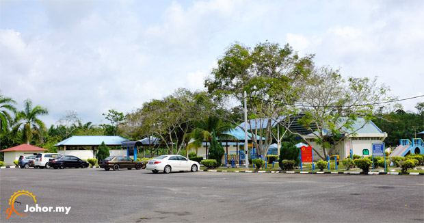

Air Panas is a small town in the district of Segamat. This town is famous and known as the hot water founded here. It is located approximately 14 kilometres from Labis through federal highway.
This town is also known as Tenang (do not be confused with Tenang Station, one of the other town in the Segamat district also). Other than hot water, this area is surrounded by man-made lakes.
Multiracial people namely a particular number from the Chinese community conduct their business in Air Panas small town whereas Malay and Indigenous community also stayed in most of the nearby villages.
Apart from that, there are also a few native resident villages available here such as Bekok, and Empangan Juaseh, and this town also has many mata kucing fruit orchards.
Kampung Tenang exploration started since early 1801. That area was opened by Tok Tenang. Tok Tenang was a village headman once. He found it when clearing the forest area for the purpose of enlarging the Kampung Tenang area.
This area is suitable for family recreation. Apart from that, public amenities such as children playground, prayer rooms, male and female toilets are also provided.

A mystery that should tell...
The waiting time has arrived. Tuk Tenang still sits cross-legged without paying attention to his other nephew. In fact Tuk Tenang is devising something. He must make the right decision. Half an hour later, Tuk Tenang came back to dwell on his nephews. His is cheerful again and immediately gives a smile to all his nephews. Tuk Tenang has taken the decision to leave Segamat land.
On the specific day, Tuk Tenang gets ready to wander together with 30 families of his nephew. Tuk Tenang brings along all five of his children which consists of Halimah, Abu Soat, Shahabudin,Hassan and Abu Bakar. "Tuk Tenang has to leave his homeland, Segamat, having felt incompatible with the Segamat land," explains Haji Ahmad Layot who is one of Tuk Tenang's descendants.
Tuk Tenang is confident that all efforts carried out will be rewarded. Therefore, Tuk Tenang carries out planting and paddy rice planting in the new village. Everything which is being worked-on has provided a huge benefit to them. All crops including paddy, continue to grow. In fact Tuk Tenang's lineage keeps on increased and expands up to this day.
Tuk Tenang himself is the head of that village. He who posses the skill in the world and afterworld knowledge, has become the focus, confidence, and place of consultation among his nephews. This Kampung Tenang opening is frequently associated with the discovery of a hot water pool. Tuk Tenang discovered the pool upon clearing the forest to bring up the Kampung Tenang area.
"There were parties which mentioned that there was once a merchant ship which brought submerged sulphur in the pond bed. Strangely, around the area of the hot water, there are no effects of the pool being a river channel. This is difficult to be believed," explained Haji Ahmad Layot's in a low key voice. He is confident and believed everything is an exaggerated story.
In fact in the history of the village opening, it shows that the pool has already existed before occurrence of the Perang Jementah in the year 1879. It is impossible that there is a sunken-ship in the bed of the hot water pond to be a twisted and turned story.
According to Haji Ahmad Layot, until today the name of Tuk Tenang has always become a pride of Kampung Tenang residents. In fact, Tuk Tenang’s name continues to lay rest along with that village name.
Kampung Tenang exploration started since early 1801. About 189 years ago, Tuk Tenang cleans the new area with his nephew. At first, the land which has just been explored is not so fertile.
Tuk Tenang found all of the pool areas to be filled with moist. He then compromises with his nephews in order to make a rice field. After cleaning watery area in that pool, hence a paddy field area is formed.
Gradually Tuk Tenang founded that amidst the area of his rice field, bubbles of hot boiling water started to appear. Finally Tuk Tenang decides to let alone that area and make it a reservoir site to wash clothes and bathe.Apart from to daily use, they also believe the hot water can restore any skin disease infection. It is believed that hot water from the pool is also refreshing to the body. Its because of these stories that the hot water pool has become a focus for the nearby population.
Until today, the Kolam Air Panas, in Kampung Tenang continues to be a mystery surrounding residents and outsiders. What is loved by the hot water pool will continue to be unattended without any changes.Several years ago, several parties have also attempted to restore that pool but it was only done halfway. However until this day, there are still visitors from afar coming to visit the pool.
Around the pool, is already filled with scrubs and tall grass. The small bridge built has already seemed old without any repairs. This is really dangerous if not carefully used.The size of the pond is getting smaller because of the scrubs and tall grass that grows. If this situation is not taken note of by certain parties, hence the extinction of a gift from Allah might occur to Kampung Tenang residents ever since its opening.At the very least, Kolam Air Panas in Kampung Tenang Labis, Johor, can be made into a foreign tourist destination and will be another form of recreational area for the country.